an island to oneself
An island to oneself
2017.10.31
Whangarei, New Zealand
We left Vava'u(Tonga) on October 22nd, and arrived 9 days later, covering 1,200 nautical miles. It was one of our quickest passages yet. It was also quite boisterous, and grey. We picked a very good weather window to leave. In the first few days we were closed-hauled, pointing south, then eventually the wind eased to the east and stayed there. We did not have to stop at Minerva Reef, the weather was that good.
The more south we got, the colder the nights and days became. We put on our gloves and tuques.
One of the highlights of this passage was meeting our friend Josh on SY Maestral mid-ocean. We passed by him, closely, and we took pictures of each other's boats! He was slowing down to time his arrival in Opua during daytime. His engine was messed up so he wanted to be able to see all obstacles to sail onto the dock on arrival.
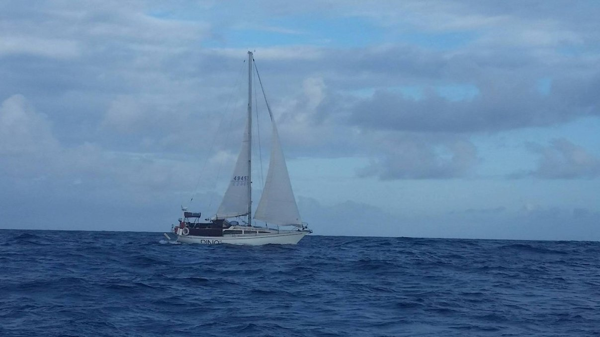 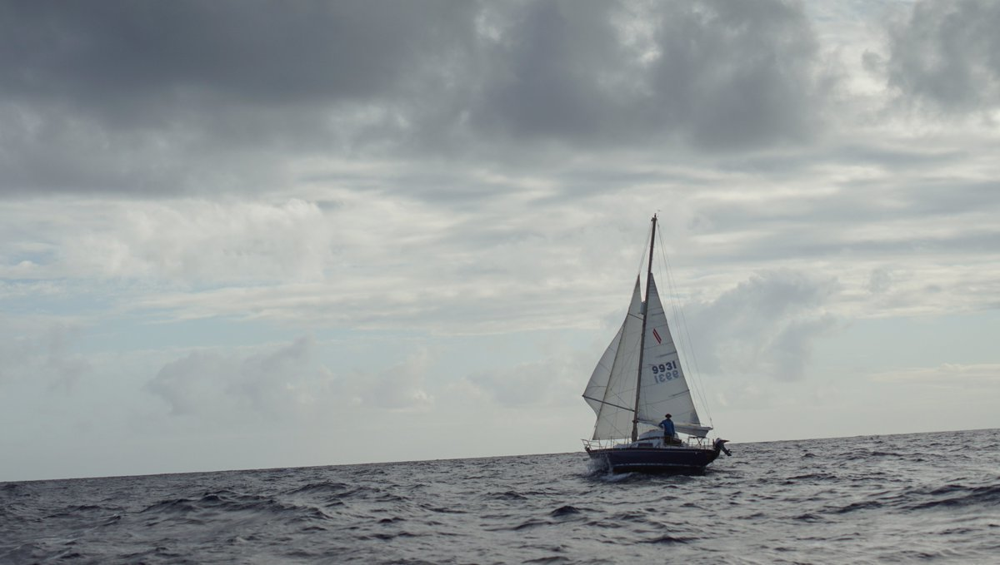Arriving in New Zealand, after a year of unknown, was a great comfort to us. There are a few things Devine and I were really looking forward to, like a good flat white, some craft beer, a fresh food market and a bulk food store. We found a city that checked all of the boxes.
Many cruisers want to arrive in Opua first, with reason, it's warm, damn gorgeous, and you know you'll find friends there, because that's where everyone goes during the cyclone season. Arriving in a strange place with familiar faces always makes the experience better, but knowing this we still chose Whangarei.
I first pronounced Whangarei as "one-gah-rey", but the proper way to say it is "fah-ngah-rey". A friend corrected me early on, sparing me the embarrassment of mispronouncing it aloud in public. I know that no one would think me a fool for making a mistake like this, but I do like learning the correct way to say things.
We arrived at Marsden Cove Marina after hours, while it was still dark out. The harbor was well-lit, but we had trouble finding the quarantine dock. The reason we had trouble was because it was full. We found a spot where we could and hoisted our yellow flag. The next day, they came aboard and checked us in! They didn't take much, we had eaten through most of our fresh food, but they did take the knob of ginger we had left, along with our pepper spray (not allowed into NZ).
The next day, we left early and made our way up Hatea river up to the town of Whangarei, timing our arrival with the flood. The river shallows near the end, and we draft a lot so we have to be careful. We arrived at Te Matau A Pohe (bone bridge), and had to wait there for a few hours because there was some construction underway.
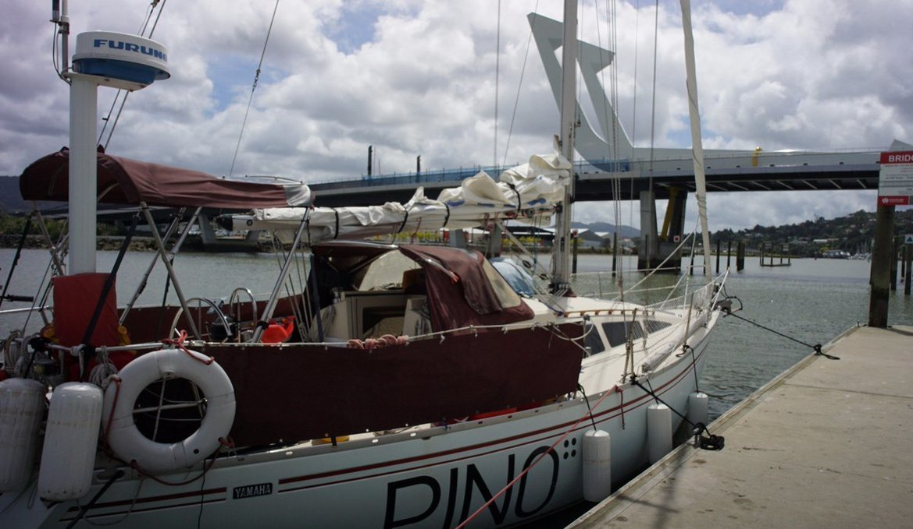We didn't mind, it gave us an opportunity to relax and sort through the mess aboard. Later, the bridge operator hailed us on VHF and let us through. The town basin was busy with paddle boarders and kayakers, making a for a stressful docking experience.
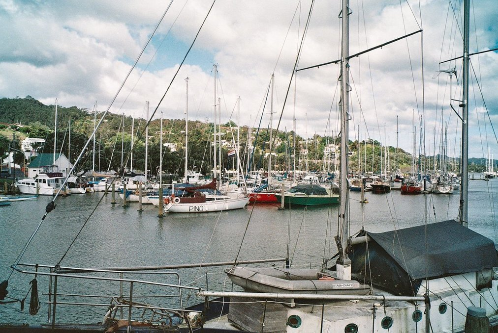Why did we choose to go there? Because staying in the Whangarei Town Basin is inexpensive, convenient, with everything just a short walk away. We'd also read that it was a good place for boat projects, and since Pino needed a lot of attention, this too, we thought, tipped the scale in its favor. We also noted that it was close to Auckland—well, it looked closer on a map. We became very familiar with that stretch of land, and of the actual distance between the two places during the 8 months we spent there.
We got a spot on a pile mooring right across from Laura Dekker's boat Guppy.
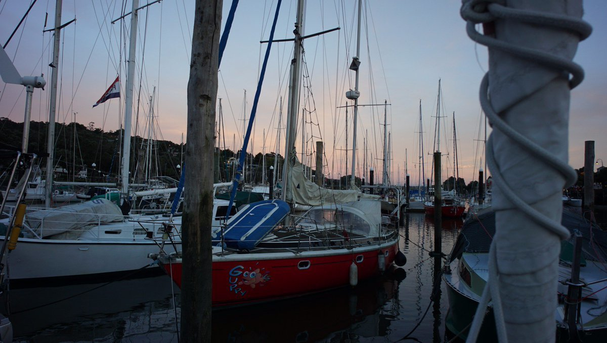2021 note:That year Laura donated the boat to a school in Los Angeles. A crew flew in to New Zealand with plans to sail it back to the United States, but things happened(a very complex and detailed series of events which we won't outline here, look it up) and the boat washed up ashore on a reef in the Cook Islands. It was a total loss. Our friend (and fellow Yamaha33 owner) was aboard this boat, we are glad that they walked away safe from this event. Although this was a sad event, after the accident our friend stayed on the island for a little while to deal with the wreckage and to recover, and while there they fell in love with a local. The two are now happily married.
The first thing we did when we arrived was to replenish our store of dried goods at Bin Inn, a really great bulk food store. The second thing was purchasing a home brew kit—priorities amirite? The third thing was to get a flat white.
I'll never forget the look on Devine's face after taking a sip of a cup of freshly brewed beans, a delicious pool of dark liquid topped with a pillowy cloud of plant milk.
Joy incarnate.
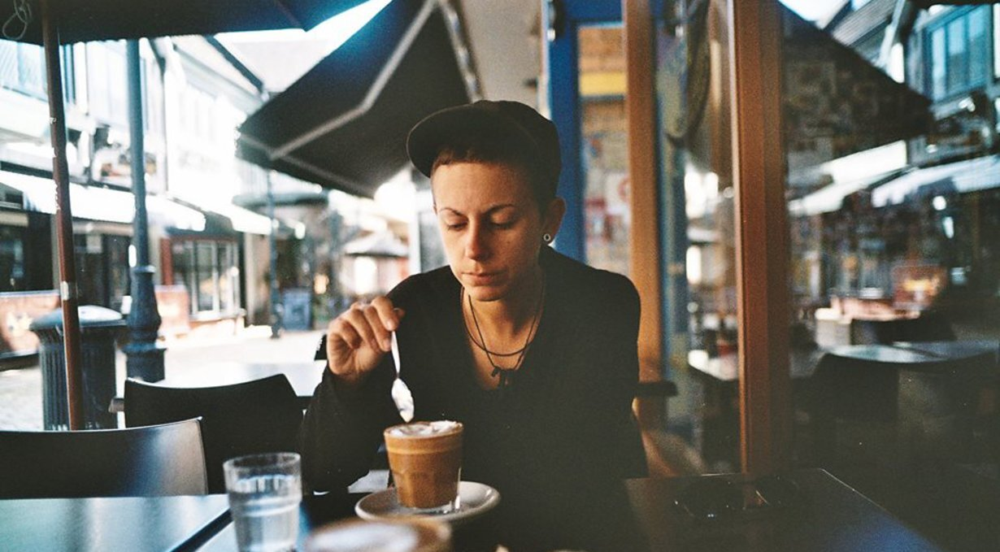We hadn't had soy milk since Mexico, and our store of good coffee beans didn't last. Once we ran out of beans, we started to drink instant coffee. We're not dependent on plant milk, we can do without it, but having a fancy drink with it every now and then is a hell of a treat! We became loyal customers of Fat Camel, the best cafe in town, which also happens to make the best falafel pitas.
Our dry goods pantry was replenished. We had buckwheat, brown rice, cornmeal, lentils and chickpeas again! When in Tonga, we'd gone through most of our staples, everything we had stocked-up with since leaving Mexico. We were down to canned chickpeas, quick oats and white rice. Living on land, our diet always had a great diversity to it, and we like to keep it that way, but it's not always possible to do this. We're learning how to stock-up better, but also, we're trying to be less picky, to make simpler meals. Popcorn without smoked paprika is still good popcorn.
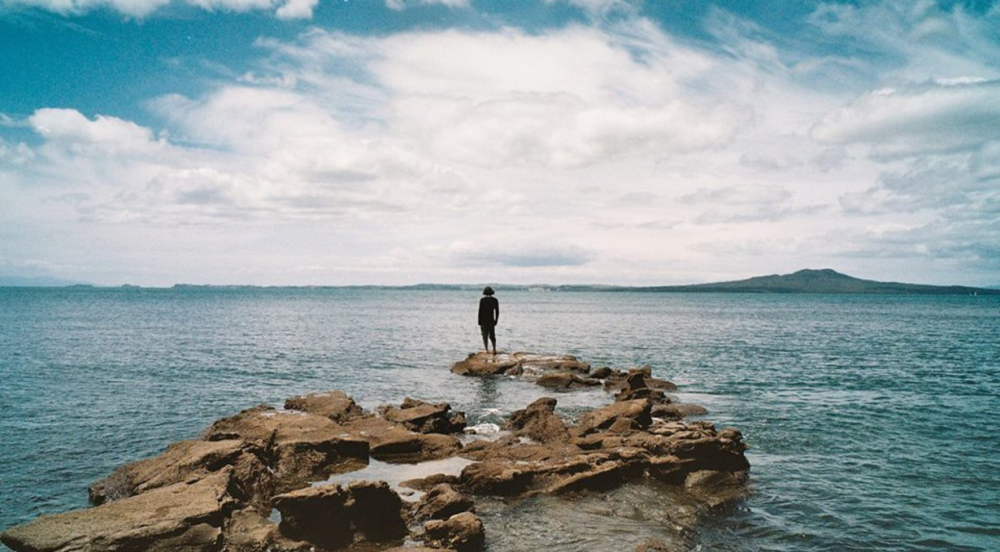Our first month in New Zealand was cold. We spent most of our time indoors, wiping condensation from our windows, watching newly-hatched ducklings eating algae off our hull, and working to help our bank accounts recover. We had many expensive projects to do on Pino before setting back out again, like changing our windows, getting AIS, a new mainsail, galley plumbing, extra solar panels, new batteries... and the list went on, and on (see the post projects and pain).
While in NZ someone from HumbleBundle approached us to help fund the production of markl. The deal fell through not long after because the company was bought off by IGN Entertainment in October 2017. So we said goodbye to thi idea, and began taking contracts with former clients. Devine also spent much time improving Left and Dotgrid during that time.
In late December, we took a break from work, and sailed out to Pakatoa, a small island in the Hauraki gulf. We were going to meet-up with people from Hackland, a maker space, we met them on a trip to Auckland a few weeks prior. Others were going to meet us there too. Game devs, musicians, p2p developers... sure enough, all of them had sailboats. New Zealand is bordered by water, and near the roaring forties, not surprising to have so many here with boats. The sailing culture is strong in Aotearoa.
We sailed down from Whangarei, making a stop for the night in Urquharts Bay. While there, a couple on a dinghy came over, a couple came to say hello because they recognized our boat. They used to have a Yamaha 36.
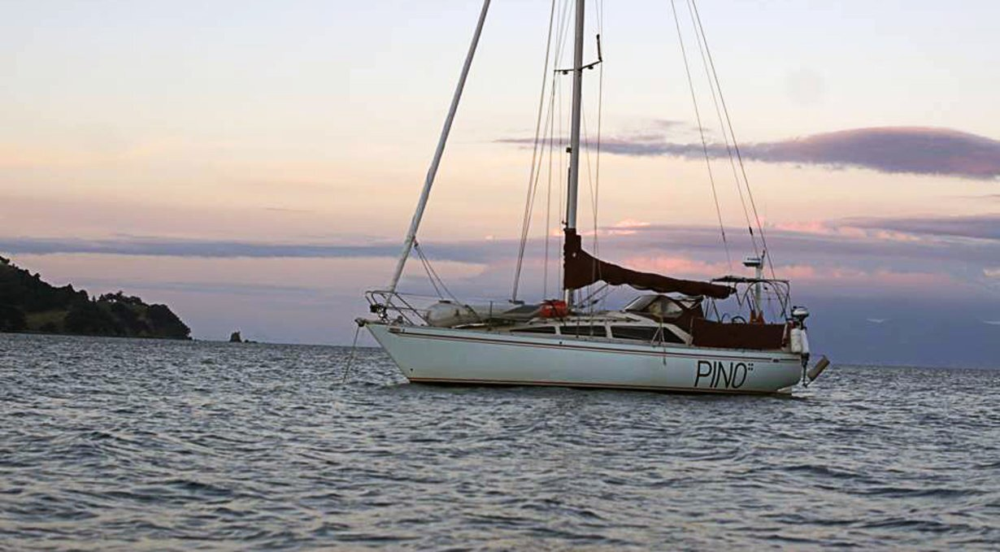Their current boat was an aluminium yacht, beautiful, unpainted grey hull. That's a dream we have, Devine & I, to have a yacht like that for high latitude sailing.
A dream for later times.
Early the next morning, Pino spread its wings and we sailed down to Kawau Island. All the bays there were cluttered with moorings, but Pino's not a big boat and were able to secure a place in North cove. Unlike the Whangarei Town basin, the water here was blue, not clear, but wonderful shades of turquoise. I learned later that this is where my heroine Lin Pardey lives.
Next, we sailed to Pakatoa. We found a place to anchor there, Dom was already there on his boat, and kayaked over to say hello. Soon, the rest of the flotilla arrived, Rocinante, with Tece and Emre, Festina Lente, with Helena and Joran, and then came Elliot and Neftaly. Robin and Courtenay aboard the spaceship Tangaroa could not join us, but we kept them in memory. The Ephemeral yacht club was not whole. Pino was, at that moment, the biggest fish in the fleet at 10 m.
Crazy, we thought, there's a first time for everything.
We soon went ashore for a guided tour of the island. Pakatoa is a private island, a bird sanctuary, you can go ashore, provided you have the permission of the caretaker Nigel. We got to go, because our friend knew him. The place was full of abandoned bungalows and free-roaming wekas—a flightless bird, endemic to New Zealand.
Pakatoa used to be a resort in the sixties, and was abandoned and left as is. We had a walk inside the bungalows, there are 60 of them on the island, all were standing, some looking better than others. We couldn't help but think of what we could do with this island if we owned it, we could build an off-grid community of artists!
Walking around the yard, we saw giants balls of metal, heavy moorings maybe, although they resembled explosive mines. Then, came the graveyard of disused items, old furniture, kitchenware, a pile of old stoves sat on one side. Dom began to list the merits of the Countess stoves, like a proper salesman, to the merriment of Devine who listened, laughing.
Nigel brought us to a collection of tall silos, claiming that up there, we could have the best view of the island. He set a ladder up to one of the silos, and one-by-one we climbed up onto it. It stood high off the ground, while scary—for me at least— it did prove to be a worthwhile climb. The view was amazing. From here, we could see our boats in the anchorage below, with moving crescents in the water created by the oncoming gusts of wind. "Might want to tuck your boat closer inland." The caretaker told us. We could see from here that we had anchored Pino a bit further out than everyone else, things look closer than they appear when you're down there. "Wind's rising."
Then, we began talking about the logistics of buying an island such as this, or how it would be to manage a community of people living here. It was all too easy to imagine—it could work, couldn't it?
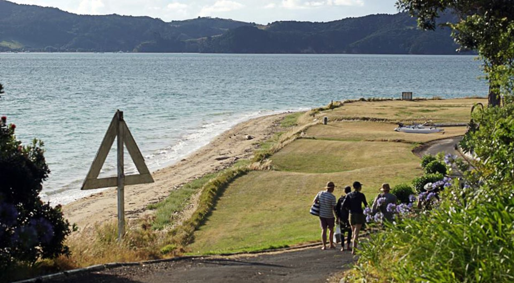Some of the old bungalows could be repurposed, the materials were still good. Getting goods on and off the island would be a challenge, a boat would be necessary, but we had that part covered. The hardest thing to do in a new, and large community of people, is to agree on rules, on a code of conduct. This is something we really did like to think about, wondering then if anyone like us had ever attempted to make an offer on the island. It was clear that the owner wasn't keen on selling it especially, Nigel mentioned there being no shortage of offers from wealthy buyers. We imagined then, speaking to the owner. "Hey, we don't have any money to buy the island, but could we just, y'know, have it?" Bet no one's asked him that before. Ballsy much? "So you want my million dollar island, for free?" "Yep! Exactly that. Thank you!"
With images of an island of our own, we each climbed back down from the silo, imaginations aflutter.
We strolled into the main resort complex next. The first building was the game room. Devine and Elliot played Ping Pong, and squash in the old court, the sound of their playing resonating throughout.
Devine looked at an old desk, covered with a thick film of dust and made a print of a hand on it, then traced the word 'witch' on top of it with a finger, Silent Hill-style. Any moment now, the sirens would blare, the sky would darken with the paint coming off the walls to reveal their caged innards, and pyramid head would come strolling in, death in his heart. "Maybe he'd like ping pong." I thought then. "Everyone likes Ping Pong."
This place had an eerie quality to it. The room keys were all set on their hooks, never to be used again. A computer room, with old computers and discs, amassed cobwebs, close to that a bar, bottles of spirits intact, undrunk. There was also a stack of old Pakatoa money, the island's own currency. The pool was empty and thirsty, ghosts of tourists walking about and taking turns on the dive board.
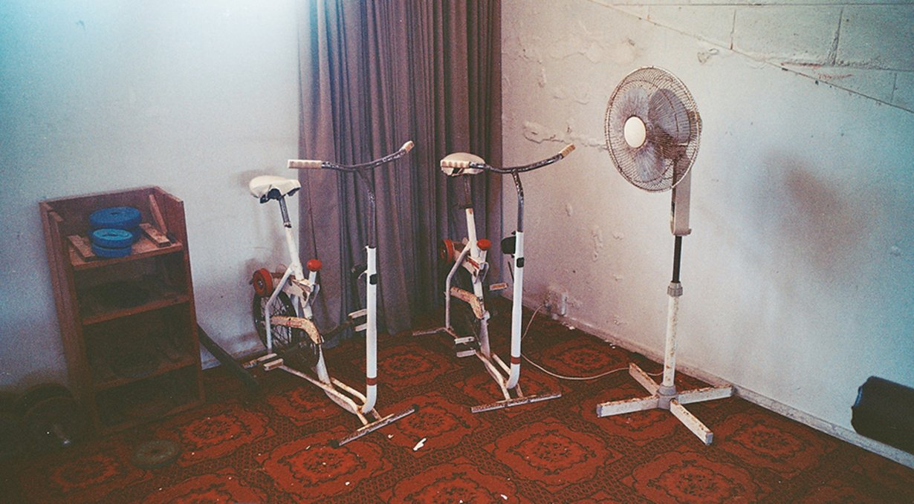What an amazing island. Once alive, now dormant, locked in time for the unforeseeable future.
We spent the evening on the beach, making a fire and roasting vegetables on a hot place that we set atop of it. The caretaker sat with us. "First time I've ever seen people roasting JUST vegetables on this plate," he said.
I smiled at this. We had a wild assortment of capsicum, kumara, onions... no meat or fish to be seen. This was the best ever bbq.
I watched sand bugs leap all too near to the flames before popping out of existence. The fire was the only source of light, aside from the stars, which we could see clearly from where we stood.
We heard excited laughs on the beach. "This is amazing! sYOU GUYS! You HAVE to come and see this!" Emre realized that the sand on the beach had bioluminescence. We'd experienced this many times in the past, in water, when splashing around in it, but never in sand. It's a phenomenon I've also observed while flushing the head, waste swirling downward into a flurry of bright green sparks—toilet magic. All of us began to walk in the dark, watching as every step expanded outward with a green glow. It was unreal. An amazing spectral display, like an interactive installation, the ground drawing up color and light with every contact. By then, Joran, Elliot and Helena had gone for a swim, they laughed and splashed around, their movements clear to us in the dark because of the green glow.
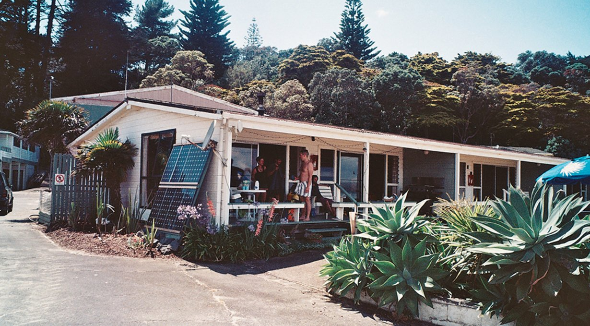The next day, we awoke early and had coffee with Nigel. I brought fresh pitas I'd made, and had them with the gift of pekmez (a mix of tahini and fruit molasses) from Tece and Emre. What a great place to wake up to, I thought then, as I sat on the porch, warm cup in hand.
Before we left, many thanks were said to the caretaker, for allowing us to see this wonderful place. Don't think I've seen anything quite like it.
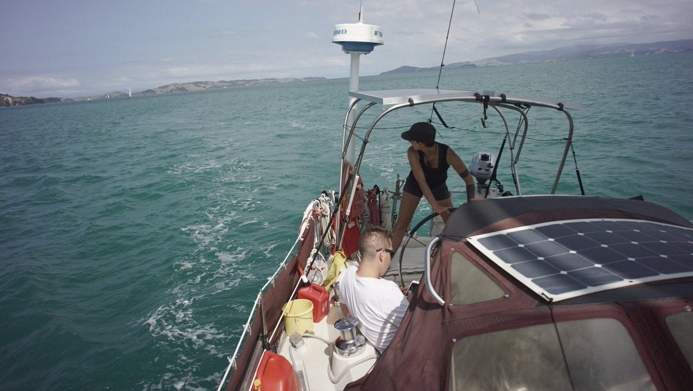We set sail to Waiheke next, making a race of it, well, it wasn't a race until Dom raised his spinnaker. The black sail billowed ahead of his boat, and gave him great speed, so we decided to do the same. Our gennaker was hoisted, freed, its wrinkles smoothed out for the first time in a long while. Pakatoa disappeared in the distance.
We returned to Whangarei, just in time for the beginning of the good weather. That summer, we had highs of 30, and through a hole in the ozone, the unobstructed New Zealand sun burned our skin if exposed without protection. Whangarei resembled the city of Sidney on Vancouver Island, small, but with everything nearby, just a short walk away. Also conveniently near, was a complex network of forest walks. We could walk 10 minutes and arrive in Mair Park, and another 30 minutes would take us to a waterfall, and tall Kauri trees.
We walked in silence, listening to the song of the Tuis, clicks, cackles, timber-like creaks, and other sounds unheard by human ears, beyond our register.
Another walk we much enjoyed, was 'the loop', going through town, over to the bascule bridge and across it. The walk would take an hour to do, would take us right back to the Town Basin and was pleasant. At low-tide, we saw the long-legged birds with their thin beaks, poking into the mud for food. At high-tide, came eels undulating in the water, and cormorants swimming just under the surface in groups. Past the bascule bridge, was a field, empty, if it weren't for the local Pukekos. Their blue bodies stood clear against the dry yellow, and greenish grasses, as did their bright orange beaks. These, along with the Kāruhiruhi were our favorites.
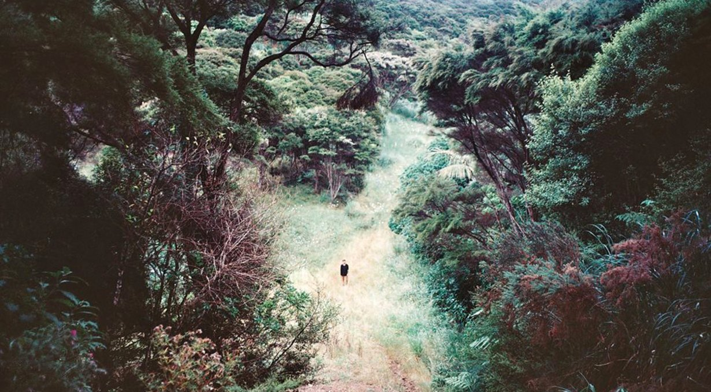I didn't care much for birds before we started sailing, but now I look for them wherever I go. New zealand is the best place for one who likes birds. Before humans came and messed it all up, this land was a kingdom to birds. I like to imagine what the world was like then, when the giant Moas walked the earth, hunted by an even bigger winged being, the Haast eagles.
Much of the places we've been to in New Zealand have left a lasting impression on us. From the sulphuric mud pools of Rotorua, to Tauranga's towering, Mount Maunganui. The Te papa museum in Wellington, and the giant soldiers of Gallipoli, left a lasting lump in my throat.
The walks in and around Tutukaka we aren't close to forgetting. Long beaches, leading to tall mounts, whose summits reveal exquisite, and unique views of the world. Paths that can only be crossed at low-tide, made dangerous by the passage of water.
Nature is strong here, and the paths are wild enough that you forget at times that there is a city just a short distance away.
It would be very easy to make a home here, we thought, it's similar to Canada in many ways. The problem is we're not quite ready to settle anywhere just yet, but like many of the places we've been this becomes another option for us, another place to be. New Zealand is a strong candidate.
We loved our time there, and the people we've met that made us feel all too welcome.
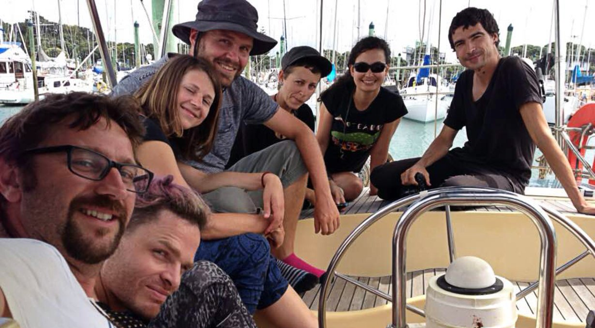We will be back, perhaps aboard an alu-hulled yacht, maybe with a plan to get an island for zero cash. We have plenty of plans for the future, that is one thing we're never short on.
Watch a video(YouTube) of our time in Pakatoa.